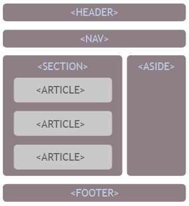

Etiquetas semánticas estructurales Veremos con detalle a continuación las etiquetas semánticas que sirven para definir la estructura de un documento HTML y por qué debemos incorporarlas cuanto antes a nuestras técnicas de desarrollo de sitios web. Las etiquetas semánticas estructurales nos sirven para que los motores de búsqueda, o cualquier otro mecanismo automático que lea un sitio web, sepa con exactitud qué partes de su contenido corresponden a cada una de las partes típicas de un sitio. Generalmente, en cualquier documento tenemos una cabecera, un cuerpo y un pie de página, elementos que definen la estructura representados por diversas etiquetas. De este modo, HTML5 tiene una etiqueta HEADER, que debe englobar aquellos elementos correspondientes a la cabecera de la página. Tiene un FOOTER, que debe englobar todas las etiquetas que componen el pie. Luego, para el cuerpo realmente no existe una etiqueta en concreto, sino que se representará por diversas otras como SECTION, ARTICLE o ASIDE. Existirán además otras etiquetas que representan elementos típicos como la barra de navegación, etiqueta NAV. Observando esas etiquetas semánticas estructurales, cualquier sistema podría procesar la página y saber cómo está estructurada y a qué parte de las típicas de una web corresponde cada contenido. Podrá saber qué contenidos se han colocado en la cabecera, elemento HEADER, cuáles son los temas de los que se habla en una web, los ARTICLES, o cuáles son los enlaces a las secciones principales del sitio, colocados en la etiqueta NAV.
Existe pues una forma lógica de colocar todos los contenidos dentro de un sitio y unas etiquetas determinadas para contenerlos, atendiendo a la estructura que nosotros queremos comunicar a los sistemas que puedan procesar el documento. La imagen que acompaña a este texto expresa una de las posibles formas de ordenar el documento con las etiquetas que nos proporciona HTML5. En la imagen se pueden ver las etiquetas estructurales más habituales, pero hay otras que podríamos utilizar dentro de las etiquetas semánticas. Además, la posición de estos elementos no tiene por qué ser así, incluso podrían anidarse de otras maneras. Quizás en nuestro sitio queramos colocar el navegador en la cabecera, en el lateral derecho o dentro del SECTION. Sería independiente siempre que utilicemos la etiqueta NAV para contenerlo. Asimismo, podrías tener más de un SECTION en el cuerpo de la página, sueltos o colocados dentro de otras etiquetas como ASIDE. Esos SECTION adicionales podrían tener otros ARTICLE o incluso, dentro de un SECTION, hacer otro esquema de cabecera y pie anidando otros HEADER y FOOTER. Como vemos, las posibilidades de agrupar, ordenar y colocar estas etiquetas para definir la estructura correría por nuestra cuenta, pudiendo generar distintos tipos de estructuras según las necesidades de cada proyecto. No obstante, siempre hay algunas reglas básicas que sí se deben cumplir, como que las unidades de contenido estén en los ARTICLE o que solo exista un navegador con NAV. En casos comunes, que deseemos tener otros navegadores, podríamos optar por echar mano de otras etiquetas semánticas como MENU, asignando al navegador principal la etiqueta NAV y a otros secundarios el MENU